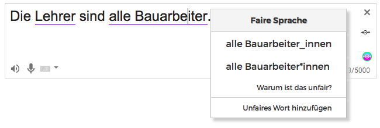

So funktioniert die Gender-Wahn Erweiterung
Toll, dass du unsere Erweiterung ausprobierst! Wir verbessern das Werkzeug ständig und es gibt Dinge, die noch nicht ganz sauber funktionieren.
1. Text korrigieren
Grundsätzlich funktioniert die Extension auf fast allen Websites, wie z.B. Twitter, Facebook, Spiegel usw.
Sobald du Text siehst, wird er erkannt und nach Gendersternchen und anderen Übeltaten durchsucht. Wenn es geht, wird die
ursprüngliche deutsche Standardgrammatik wiederhergestellt.

2. Degender Check aktivieren
Du kannst dir jederzeit das Original ansehen und die Korrekturfunktion einmalig oder dauerhaft ausschalten.
Diese Optionen steht zur Verfügung:

3. Vorschläge für Verbesserungen machen
Wenn du ein Wort siehst, das falsch korrigiert wurde, kannst du es uns anonym sagen. Wir vebessern unsere Werkzeuge städig.

Datenschutz
Datenschutz und Transparenz ist uns wichtig. Um deine Texte auf korrigieren zu können, senden wir diese nicht an einen Server.
Wir erfassen keine Texte, setzen keine Cookies und entnehmen keine Benutzerinformation. Wir benötigen deine Zustimmung nur, um
die Benutzung der Erweiterungen selbst, also die Anzahl der Installationen und die Frequenz der Nutzung zu erfassen. Diese Daten
werden niemals einer Person oder einem Geräte zugordnet.
Mit deiner Nutzung der Degender-Erweiterung stimmst du ausdrücklich zu, dass Nutzungsdaten an uns und an Partner übertragen werden.
Weitere Informationen zum Datenschutz bei uns allgemein und in Bezug auf die Browser Extension findest du hier: https://gender-wahn.de/impressum/
Seiten, auf denen Degender aktuell deaktiviert ist
Auf manchen Seiten funktioniert unsere Tool noch nicht ohne Probleme, daher haben wir es auf diesen deaktiviert.
Falls du Probleme auf einer Website mit unserem Tool hast, klicke erst auf das Degender-Symbol oben rechts und dann auf "Auf dieser Seite deaktivieren".
Oder du nutz die folgende Funkion um die Seiten hinzuzufügen:
Und, wenn du uns per Mail an info@gender-wahn.de Bescheid gibst, auf welcher Seite du Probleme hast, ist dir unsere Dankbarkeit sicher. Wir schauen uns das ganze auch einmal an.
Die Degender-Browser Extension ist ein Angebot von Gender-Wahn.de - Comzept Systemhaus GbR, Hafersteig 113, 12683 Berlin.
Infos zum Datenschutz sowie Impressum gibt es hier: https://gender-wahn.de/impressum/